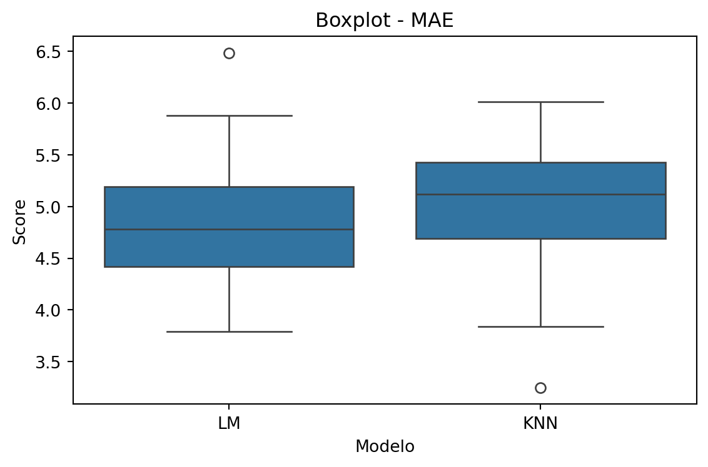
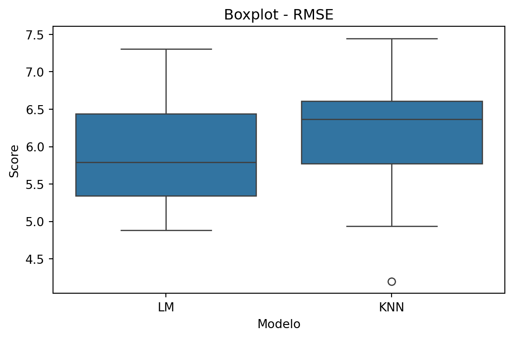
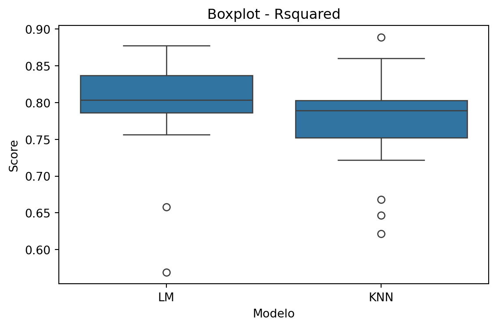

Como já foi dito em capítulos anteriores, existem diversas formas de comparar preditores. Nesse capítulo, vamos estudar um meio de fazer isso e ver mais detalhadamente as medidas de comparação presentes no Python.
Exemplo de Comparação de Regressores
Vamos usar a base de dados faithful.
import pandas as pdbase = pd.read_csv("Cadernos Grupo Python\\AvaliandoFuncoesPreditoras\\faithful.csv")base.info()
Note que a base apresenta apenas duas variáveis: eruptions, que contém uma amostra correspondente ao tempo, em minutos, que o gêiser Old Faithful permanece em erupção; e waiting, que contém uma amostra correspondente ao tempo, em minutos, até a próxima erupção. Vamos tentar prever a variável waiting por meio da variável eruptions. Note ainda que a variável de interesse é quantitativa contínua, portanto, queremos construir um regressor.
Vamos treinar nosso modelo utilizando 2 métodos separadamente: Linear Model e k-Nearest Neighbor. Para fazer a comparação, vamos escolher uma semente e assim tornar a comparação mais “justa”. Além disso, estamos usando toda a base de dados pra treinar o medelo, pois estamos apenas avaliando o melhor modelo.
import pandas as pdimport numpy as npfrom sklearn.linear_model import LinearRegressionfrom sklearn.neighbors import KNeighborsRegressorfrom sklearn.model_selection import cross_val_score, RepeatedKFoldbase = pd.read_csv("Cadernos Grupo Python\\AvaliandoFuncoesPreditoras\\faithful.csv")X = base[["eruptions"]] # Variável preditora (features)y = base["waiting"] # Variável alvo (target)# Configuração da Validação Cruzadacv = RepeatedKFold(n_splits=10, n_repeats=3, random_state=133)# Definição dos Modelosmodelos = {'rl': LinearRegression(), # Regressão Linear'kn': KNeighborsRegressor() # K-Nearest Neighbors Regressor}# Nomes mais amigáveis para exibição dos modelosnomes_exibicao_modelos = {'rl': 'LM', # Linear Model'kn': 'KNN'# K-Nearest Neighbors}# Definição das Métricas de Avaliaçãoscorings = {'MAE': 'neg_mean_absolute_error', # Erro Absoluto Médio'RMSE': 'neg_root_mean_squared_error', # Raiz do Erro Quadrático Médio'Rsquared': 'r2'# Coeficiente de Determinação R²}# Nomes mais amigáveis para exibição das métricasnomes_exibicao_metricas = {'mae': 'MAE','rmse': 'RMSE','r2': 'Rsquared'}# Dicionário que armazena as métricas de cada modelotodos_os_scores = {}for chave_metrica, nome_scoring_sklearn in scorings.items(): scores_para_metrica_atual = {}for chave_modelo, objeto_modelo in modelos.items(): scores_cv_brutos = cross_val_score(objeto_modelo, X, y, cv=cv, scoring=nome_scoring_sklearn)# o python considera o maior valor mellhor, portanto usamos as métricas com sinal invertido e assim obtemos o menor valorif nome_scoring_sklearn.startswith("neg_"): scores_processados =-scores_cv_brutoselse: scores_processados = scores_cv_brutos scores_para_metrica_atual[chave_modelo] = scores_processados # atrelando os resultados de uma métrica a um modelo todos_os_scores[chave_metrica] = scores_para_metrica_atual # envelopando os valores dos modelos dentro da respectiva métrica# Imprime informações geraisnomes_modelos_usados = [nomes_exibicao_modelos.get(k, k) for k in modelos.keys()]print(f"Models: {', '.join(nomes_modelos_usados)}")print(f"Number of resamples: {cv.get_n_splits(X, y)}")print("-"*30+"\n") # Linha separadora inicial# Itera sobre o dicionário de cada métricafor chave_metrica, scores_dos_modelos in todos_os_scores.items(): nome_display_metrica = nomes_exibicao_metricas.get(chave_metrica, chave_metrica)print(f"{nome_display_metrica}\n") # Ex: MAE, RMSE, Rsquared linhas_do_dataframe = [] indices_do_dataframe = []# iterando sobre o dicionário dos modelos que contém o array de resultados de cada métricafor chave_modelo, array_de_scores in scores_dos_modelos.items(): estatisticas = {'Min.': np.min(array_de_scores),'1st Qu.': np.percentile(array_de_scores, 25),'Median': np.median(array_de_scores),'Mean': np.mean(array_de_scores),'3rd Qu.': np.percentile(array_de_scores, 75),'Max.': np.max(array_de_scores),"NA's": int(np.sum(np.isnan(array_de_scores))) } linhas_do_dataframe.append(estatisticas) indices_do_dataframe.append(nomes_exibicao_modelos.get(chave_modelo, chave_modelo)) df_da_metrica = pd.DataFrame(linhas_do_dataframe, index=indices_do_dataframe)print(df_da_metrica.to_string(header=True, index=True))print("\n") # Linha separadora entre métricas
Models: LM, KNN
Number of resamples: 30
------------------------------
MAE
Min. 1st Qu. Median Mean 3rd Qu. Max. NA's
LM 3.792011 4.420689 4.783234 4.806344 5.191995 6.483631 0
KNN 3.250000 4.693452 5.118519 5.056464 5.427778 6.014815 0
RMSE
Min. 1st Qu. Median Mean 3rd Qu. Max. NA's
LM 4.885094 5.343497 5.789113 5.890330 6.440191 7.303826 0
KNN 4.199830 5.772231 6.369425 6.203436 6.608013 7.444212 0
Rsquared
Min. 1st Qu. Median Mean 3rd Qu. Max. NA's
LM 0.569317 0.78651 0.803728 0.797480 0.836703 0.877684 0
KNN 0.621583 0.75235 0.789425 0.776107 0.802968 0.888682 0
Repare que foi calculada três diferentes medidas: “MAE”, “RMSE”, e “Rsquared”. Nesse caso, queremos o modelo que possua MAE e RMSE baixo e $ R^2$ alto. Para vizualizar melhor, podemos construir um boxplot comparativo da seguinte forma:
# lista para armazenar os dicionáriosvalores_metricas = []for metrica, modelo_scoring in todos_os_scores.items():for modelo, array_resultados_metrica in modelo_scoring.items():# percorre a lista com os valores de cada métrica e adiciona ao dicionáriofor score in array_resultados_metrica: valores_metricas.append({"modelo": nomes_exibicao_modelos.get(modelo, modelo),"metrica": nomes_exibicao_metricas.get(metrica, metrica),"scoring": score })valores_metricas_df = pd.DataFrame(valores_metricas)
import matplotlib.pyplot as pltimport seaborn as snmetricas = valores_metricas_df["metrica"].unique()for metrica in metricas: plt.figure(figsize=(6, 4)) subset = valores_metricas_df[valores_metricas_df["metrica"] == metrica] sn.boxplot(data=subset, x="modelo", y="scoring") plt.title(f"Boxplot - {metrica}") plt.xlabel("Modelo") plt.ylabel("Score") plt.tight_layout() plt.show()



Os boxplots revelam que o modelo linear apresenta a uma mediana ruim nas três métricas comparativas, com os dados mais dispersos, especialmente no \(R^2\), indicando alta variabilidade. Em contrapartida, o KNN mostra uma concentração maior dos dados no RMSE e no \(R^2\).